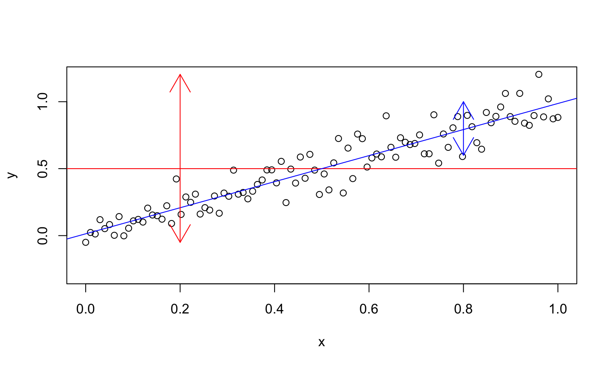

6/4/2020
Simple Linear Regression
Simple Linear Regression
The simple linear regression model consists of the mean function \[E(Y│X=x)=\beta_0+\beta_1 x,\]
and variance function
\[var(Y│X=x)=\sigma^2,\] where:
- \(Y\) is the response
- \(X\) is a regressor variable
- \(\beta_0\) and \(\beta_1\) are known as regression parameters or coefficients.
Understanding the model
Understanding the model

Understand Coefficients
View from single observation
Assume that we have n observations or cases for which the response and predictor variables are measured.
- The responses are denoted \(y_1,y_2,\dots ,y_n\).
- The regressor values for regressor X are denoted \(x_1,x_2,\dots,x_n\).
Each response will deviate from its associated mean, so our statistical model must include an additional source of variation.
The statistical model for each response is \[y_i=\beta_0+\beta_1 x_i+\epsilon_i,\quad i=1,2,\dots,n,\]
where \(\epsilon_i\) denotes the deviation of \(y_i\) from its mean.
- The \(\epsilon_i\) are known as errors.
Conditions on Error
Conditional on knowing the regressor values, the errors have:
- Mean 0
- Variance \(\sigma^2\) (constant)
- And are uncorrelated.
Mathematically, this is the same as:
- \(E(\epsilon_i│X=x_i )=0\)
- \(var(\epsilon_i│X=x_i )=\sigma^2\)
- \(cov(\epsilon_i,\epsilon_j )=0\) when \(i\neq j\).
What about the response?
Mean:
\[E[Y_i|X_i] = E[\beta_0+\beta_1X_i + \epsilon_i]= \beta_0 + \beta_1X_i\] \[Var(Y_i|X_i) = Var(\beta_0+\beta_1X_i + \epsilon_i) = Var(\epsilon_i) = \sigma^2\] \[cov(Y_i, Y_j) = 0,\quad i \neq j\] The responses \(Y_i\) come from probability distributions whose means are \(\beta_0+\beta_1X_i\) and whose variances are \(\sigma^2\), the same for all levels of \(X\). Further, any two responses \(Y_i\) and \(Y_j\) are uncorrelated.
Example
#OLS
Ordinary Least Square (OLS) Estimation
Ordinary least squares is the method most commonly used for estimating the regression parameters.
- This method estimates the regression parameters by the values that minimize the residual sum of squares.
The fitted value for observation i is the estimated mean response at the observed values of the regressor variables, and is given by \[\hat{y}_i= \hat{E}(Y│X=x_i )=\hat{\beta}_0+\hat{\beta}_1 x_i.\]
The \(\hat{}\) (hat) over \(\beta_0\) and \(\beta_1\) means that these are the estimated values of the parameters.
The fitted line is \[\hat{Y} =\hat{E} (Y│X)=\hat{\beta}_0+\hat{\beta}_1 X.\]
Residuals
The residual for observation i is the difference between its response and fitted value, i.e.,
\[\hat{\epsilon}_i = y_i -\hat{y}_i\] The residual sum of squares (RSS), is the sum of the squared residuals, i.e., \[RSS = \sum_{i=1}^n \hat{\epsilon}_i^2 = \sum_{i=1}^n (y_i-\hat{y}_i)^2 = \sum_{i=1}^n\left(y_i - (\hat{\beta}_0 + \hat{\beta}_1x_i)\right)^2.\]
OLS estimation estimates \(\beta_0\) and \(\beta_1\) with the values of \(\hat{\beta}_0\) and \(\hat{\beta}_1\) that minimize the RSS.
OLS Estimators
\[\hat{\beta}_1 = \frac{\sum(x_i-\overline{x})(y_i-\overline{y})}{\sum(x_i-\overline{x})^2}\]
\[\hat{\beta}_0 = \overline{y} - \hat{\beta}_1\overline{x}\]
In Picture
Forbes’s Data
James D. Forbes (1809-1868) performed a series of experiments to study the relationship between atmospheric pressure and the boiling point of water. He provided 17 pairs of measurements of atmospheric pressure in inches of mercury and boiling point in degrees Fahrenheit.
Forbes’s Data
Regression pressure on boiling point temperature we obtain the fitted line \[\hat{Y} =\hat{E}(press|BP) = -81.06 + 0.52 BP\] The estimated intercept \(\hat{\beta}_0 = -81.06\), which is the esimated value of pressure when BP = 0.
- Since the temperatures in the data are between 194 and 212 degree Fahrenheit, this estimate does not have a useful physical interpretation. This is simply an extrapolation.
The estimated slope is \(\hat{\beta} = 0.52\), meaning that for each degree increase in boiling point, we expect pressure to increase by 0.52 units.
Unbiasedness of OLS estimators
Show that \(\hat{\beta}_0\) and \(\hat{\beta}_1\) are unbiased estimators of \(\beta_0\) and \(\beta_1\) respectively.
Linear Models in General
Curves Vs. Lines (!)
Curve to Line
Curve to Line
Defining a Linear Model
A very general way to model the response \(Y\) in terms of three regressors, \(X_1, X_2\), and \(X_3\) is
\(Y=f(X_1,X_2,X_3 )+\epsilon\),
where: - \(f\) is an unknown function - \(\epsilon\) is the error.
If the function \(f\) is too general, we have no hope of estimating it.
Defining a Linear Model
Typically, we assume a linear model, which (in this case) means
\[Y=\beta_0+\beta_1 X_1+\beta_2 X_2+\beta_3 X_3+\epsilon.\]
- \(\beta_0, \beta_1, \beta_2\), and \(\beta_3\) are the regression parameters or coefficients.
- \(\beta_0\) is the intercept.
The linear model assumption reduces the problem to the estimation of four parameters instead of an infinite-dimensional \(f\).
Linearizable
A linear model has the parameters enter the model linearly; the regressors do not need to be linear.
Linear model: \[Y=\beta_0+\beta_1 X_1+\beta_2 \ln (X_2)+\beta_3 X_1 X_2+\epsilon\]
Non-linear model: \[Y=\beta_0+\beta_1 X_1^{\beta_2 }+\epsilon\]
Some models are linearalizable, which means they become a linear model after a transformation, e.g., apply the ln function to \(Y=\beta_0 X_1^(\beta_1 ) \epsilon\).
Flaxibility of Linear Model
Linear models are very flexible because the predictors can be transformed and combined in any way.
- Linear models can be expanded and modified to handle complex datasets.
- Linear models can be curved in space.
- Nonlinear models are rarely necessary, and arise more from a theoretical assumption than empirical investigation.
Flaxibility of Linear Model
Examples of Linear Models:
- First-order regression model
The regression model has p-1 predictor variables.
\[Y=\beta_0+\beta_1 X_1+\dots+\beta_{p-1} X_{p-1}+\epsilon.\]
- Polynomial regression
- Polynomial regression models contain squared and higher-order terms, making the response function curvilinear.
- e.g., if we let \(X_2=X_1^2\), then we get the model \(Y=\beta_0+\beta_1 X_1+\beta_2 X_1^2+\epsilon\).
- Polynomial regression models contain squared and higher-order terms, making the response function curvilinear.
- Qualitative predictor variables -We can include qualitative predictor variables in our model using something called indicator variables.
Examples of Linear Models
- Transformed variables
- Models with transformed variables can involve complex, curvilinear relationships.
- e.g., \(\log (Y) = \beta_0+\beta_1 X_1+\beta_2 X_2+\beta_3 + \epsilon\).
- e.g., \(1/Y_i=\beta_0+\beta_1 X_1+\beta_2 X_2+\beta_3 X_3+\epsilon\)
- Interaction Effects -When the effects of regressor variables are not additive, the effect of one regressor variable depends on the levels of the other regressor variables. In this case, we need interaction variables.
- E.g., \(Y=\beta_0+\beta_1 X_1+\beta_2 X_2+\beta_3 X_1 X_2+\epsilon\).
Matrix Representation
Matrix Representation of a Linear Regression Model
If we have a response \(Y\) and three regressors, \(X_1, X_2\), and \(X_3\), we might present the data in tabular form as \[\begin{matrix} y_1 & x_{11} & x_{12} & x_{13}\\ y_2 & x_{21} & x_{22} & x_{23}\\ \dots & \dots & \dots & \dots \\ y_n & x_{n1} & x_{n2} & x_{n3} \end{matrix}\]
where \(n\) is the number of observations (or cases), in the dataset, \(y_1,\dots ,y_n\) are the n responses, and \(x_{ij}\) denotes the value of the \(j\)th regressor variable for observation \(i\).
Matrix Representation of a Linear Regression Model
Our system of regression equations can be written as
\[y_i=\beta_0+\beta_1 x_{i1}+\beta_2 x_{i2}+\beta_3 x_{i3}+\epsilon_i,\qquad i=1,…,n.\]
It is simpler to write the regression equation as
\[y=X\beta+\epsilon,\]
with \(y=(y_1,y_2,…,y_n )^T,\ \beta=(\beta_0,\beta_1,\beta_2,\beta_3 )^T,\ \epsilon=(\epsilon_1,\epsilon_2,…,\epsilon_n )^T\), and
\[\begin{pmatrix} 1 & x_{11} & x_{12} & x_{13}\\ 1 & x_{21} & x_{22} & x_{23}\\ \dots & \dots & \dots & \dots \\ 1 & x_{n1} & x_{n2} & x_{n3} \end{pmatrix}\]
Matrix Representation of a Linear Regression Model
In practice, we would have:
- \(p-1\) regressors instead of 3
- \(y\) would be an n×1 vector
- \(\beta\) would be a p×1 vector
- \(\epsilon\) would be an n×1 vector
- \(X\) would be an n×p matrix.
The column of ones is related to the intercept term.
We can always assume \(E(\epsilon|X)=0\) since, if this is not the case, we can always absorb it into the mean part of the model so that the errors have a zero expectation.
Least Squares Estimation of \(\beta\)
The regression model, \(y=X\beta+\epsilon\), partitions the response into:
- A systematic (mean) component, \(X\beta\)
- A random component, \(\epsilon\).
We would like to choose \(\beta\) so that the systematic part explains as much of the response as possible, i.e., minimize the errors \(\epsilon\) in some way.
Least Squares Estimation of \(\beta\)
The regression parameters are most commonly estimated by finding the β that minimizes the sum of the squared errors.
The least squares estimator of \(\beta\), denoted \(\hat{\beta}\) minimizes
\[Q=\sum \epsilon_i^2=\epsilon^T \epsilon=(y-X\beta)^T (y-X\beta).\]
How do we find the value of \(\beta\) that minimizes \(Q\)?
Derivation
Simplify \(Q\)
\[Q=y^T y-2\beta^T X^T y+\beta^T X^T X\beta\] Differentiate with respect to \(\beta\) \[\frac{\partial Q}{\partial \beta}=-2X^T y+2X^T X\beta.\]
To minimize Q, we set the derivative equal to zero and simplify.
The normal equations are \(X^T X\beta=X^T y\).
Provided that \(X^T X\) is invertible:
\[\hat{\beta}=(X^T X)^{-1} X^T y\]
Fitted Values and Hat Matrix
The fitted values \(\hat{y} = (\hat{y}_1, \hat{y}_2, \dots , \hat{y}_n)^T\) may be written as
\[\hat{y}=X\hat{\beta}=X(X^T X)^{-1} X^T y=Hy,\]
where \(H=X(X^T X)^{-1} X^T\).
H is called the hat matrix or projection matrix.
- This is the orthogonal projection of \(y\) onto the space spanned by \(X\).
- \(H\) is a useful theoretical matrix, but is often NOT computed because it is large (\(n\times n\)).
Fitted Values
The \(i\)th fitted value is given by \[\begin{aligned}\hat{y}_i = & \hat{E}\left(Y|X_1 = x_{i1}, \dots , X_{p-1} = x_{i, p-1} \right)\\ =& \hat{\beta}_0 + \hat{\beta}_1x_{i1}+\hat{\beta}_2x_{i2} +\dots + \hat{\beta}_{p-1}x_{i,p-1}.\end{aligned}\]
The \(i\)th fitted value is the estimated mean response for the ith observation.
The fitted model is given by \[\hat{Y}=\hat{E}\left(Y|X\right) = \hat{\beta}_0 + \hat{\beta}_1X_{1}+\hat{\beta}_2X_{2} +\dots + \hat{\beta}_{p-1}X_{p-1}.\]
The fitted model is the estimated mean response as a function of the regressors.
Residuals
The residuals, \(\hat{\epsilon} = (\hat{\epsilon}_1, \hat{\epsilon}_2, \dots , \hat{\epsilon}_n)^T\), may be written as
\[\hat{\epsilon} = y-\hat{y} = y-Hy = (I-H)y\]
where \(I\) is the identity matrix of size \(n\times n\).
Note that the residual of observation \(i\) is still
\[\hat{\epsilon}_i = y_i - \hat{y}_i = y_i - (\hat{\beta}_0 + \hat{\beta}_1x_{i1}+\hat{\beta}_2x_{i2} +\dots + \hat{\beta}_{p-1}x_{i,p-1}).\]
Property of \(H\)
Show that \(H\) is symmetric.
Property of \(H\)
Show that \(H\) is symmetric.
Proof Note that, for any square and invertible matrix \(A\), \((A^T)^{-1}= (A^{-1})^T\).
\[\begin{aligned} H^T = & \left(X(X^TX)^{-1}X^T\right)^T \\ = & (X^T)^T \left((X^TX)^{-1}\right)^TX^T\\ = & X \left((X^TX)^T\right)^{-1}X^T\\ = & X \left(X^TX\right)^{-1}X^T\\ = & H. \end{aligned}\]
Property of \(H\)
Show that \(H\) is idempotent.
Property of \(H\)
Show that \(H\) is idempotent.
Proof Note that, a matrix \(A\) is idempotent if \(AA = A\).
\[\begin{aligned} HH = & \left(X(X^TX)^{-1}X^T\right) \left(X(X^TX)^{-1}X^T\right)\\ = & X(X^TX)^{-1}(X^T X)(X^TX)^{-1}X^T\\ = & X(X^TX)^{-1}X^T\\ = & H. \end{aligned}\]
Properties of \(I-H\)
\(I-H\) is also symmetric and idempotent.
symmetric + idempotent = orthogonal projection
Residuals and Fitted Values are Orthogonal
\[\begin{aligned}\langle \hat{y}, \hat{\epsilon} \rangle = & \hat{y}^T\hat{\epsilon}\\ = & (Hy)^T(I-H)y\\ =& y^TH^T(I-H)y\\=& y^TH(I-H)y\\=&y^T(H-HH)y\\=&y^T(H-H)y\\=& y^T\mathbf{0}y\\=& 0\end{aligned}\]
Covariance of Residuals and Fitted Values
Covariance of Residuals and Fitted Values
\[\begin{aligned} Cov\left[\hat{y},\hat{\epsilon}|X\right] = & Cov\left[Hy, (I-H)y|X\right]\\ = & H\ Cov\left[y, y|X\right](I-H)^T\\ =& H\ \sigma^2 (I-H)^T\\ =& \sigma^2 H(I-H)^T\\ =& \sigma^2 H(I-H)\\ =& \sigma^2 (H-HH)\\ =& 0 \end{aligned}\]
Can you see, \[||y||^2 = ||\hat{y}||^2 + ||\hat{\epsilon}||^2\] \[Var(y) = Var(\hat{y}) + Var(\hat{\epsilon})\]
RSS
The residual or error sum of squares, RSS, may be written as
\[RSS = \sum \hat{\epsilon}_i^2 = \hat{\epsilon}^T\hat{\epsilon} = y^T(I-H)y\]
\[\begin{aligned} RSS = & \hat{\epsilon}^T\hat{\epsilon} \\ = & \left((I-H)y\right)^T\left((I-H)y\right)\\ =& y^T(I-H)^T(I-H)y\\ =& y^T(I-H)(I-H)y & (I-H) \text{ is symmetric}\\ =& y^T(I-H)y & (I-H) \text{ is idempotent} \end{aligned}\]
Properties of the OLS
The ordinary least squares estimator \(\hat{\beta}\) is an unbiased estimator for \(\beta\).
Properties of the OLS
The ordinary least squares estimator \(\hat{\beta}\) is an unbiased estimator for \(\beta\).
\[\begin{aligned} E[\hat{\beta}] = & E\left[(X^TX)^{-1}X^Ty \right]\\ = & (X^TX)^{-1}X^TE\left[y \right]\\ = & (X^TX)^{-1}X^TE\left[X\beta + \epsilon \right]\\ = & (X^TX)^{-1}X^T\left[X\beta + E(\epsilon) \right]\\ = & (X^TX)^{-1}X^TX\beta \\ = & \beta \end{aligned}\]
Properties of OLS
Provided that \(Var(\epsilon)=\sigma^2I\), show that
\[Var(\hat{\beta}) = \sigma^2(X^TX)^{-1}\]
Properties of OLS
Provided that \(Var(\epsilon)=\sigma^2I\), show that
\[Var(\hat{\beta}) = \sigma^2(X^TX)^{-1}\]
Proof \[\begin{aligned} Var(\hat{\beta}) = & Var \left((X^TX)^{-1}X^Ty\right)\\ =& (X^TX)^{-1}X^T Var(y)\left((X^TX)^{-1}X^T\right)^T\\ =& (X^TX)^{-1}X^T Var(X\beta + \epsilon)X(X^TX)^{-1}\\ =& (X^TX)^{-1}X^T Var(\epsilon)X(X^TX)^{-1}\\ =& (X^TX)^{-1}X^T \sigma^2IX(X^TX)^{-1}\\ =& \sigma^2(X^TX)^{-1}X^T X(X^TX)^{-1}\\ =& \sigma^2(X^TX)^{-1} \end{aligned}\]
Properties of OLS
The estimator \[\hat{\sigma}^2 = \frac{\hat{\epsilon}^T\hat{\epsilon}}{n-p}\] is an unbiased estimator of \(\sigma^2\).
The estimated standard error of \(\hat{\beta}_{i-1}\) is
\[\hat{se}\left(\hat{\beta}_{i-1}\right) = \hat{\sigma}\sqrt{\left(X^TX\right)^{-1}_{ii}}\] where \(\left(X^TX\right)^{-1}_{ii}\) is the element in the \(i\)th diagonal position of \((X^TX)^{-1}\).
Example
Galapagos Example
The data contained in gala in the faraway package in R are related to the number of plant species on the various Galapagos Islands. There are 30 cases (Islands) and seven variables in the data set. The variables are:
- Species – the number of plant species found on the island
- Endemics- the number of endemic species (not used)
- Area – the area of the island (km2)
- Elevation – the highest elevation of the island (m)
- Nearest (the distance from the nearest island (km)
- Scruz – the distance from Santa Cruz Island (km)
- Adjacent – the area of the adjacent island (km\(^2\))
Galapagos Data
data(gala, package = 'faraway') str(gala)
## 'data.frame': 30 obs. of 7 variables: ## $ Species : num 58 31 3 25 2 18 24 10 8 2 ... ## $ Endemics : num 23 21 3 9 1 11 0 7 4 2 ... ## $ Area : num 25.09 1.24 0.21 0.1 0.05 ... ## $ Elevation: num 346 109 114 46 77 119 93 168 71 112 ... ## $ Nearest : num 0.6 0.6 2.8 1.9 1.9 8 6 34.1 0.4 2.6 ... ## $ Scruz : num 0.6 26.3 58.7 47.4 1.9 ... ## $ Adjacent : num 1.84 572.33 0.78 0.18 903.82 ...
OLS Estimate
X = gala[,c("Area", "Elevation", "Nearest", "Scruz", "Adjacent")]
X$Const = rep(1, nrow(X))
X <- as.matrix(X)
Y <- gala$Species
solve(t(X)%*%X)%*%t(X)%*%Y
## [,1] ## Area -0.023938338 ## Elevation 0.319464761 ## Nearest 0.009143961 ## Scruz -0.240524230 ## Adjacent -0.074804832 ## Const 7.068220709
Using Built-in function
lmod <- lm(Species ~ Area + Elevation + Nearest + Scruz + Adjacent, data = gala) summary(lmod)$coefficients
## Estimate Std. Error t value Pr(>|t|) ## (Intercept) 7.068220709 19.15419782 0.369016796 7.153508e-01 ## Area -0.023938338 0.02242235 -1.067610554 2.963180e-01 ## Elevation 0.319464761 0.05366280 5.953187968 3.823409e-06 ## Nearest 0.009143961 1.05413595 0.008674366 9.931506e-01 ## Scruz -0.240524230 0.21540225 -1.116628222 2.752082e-01 ## Adjacent -0.074804832 0.01770019 -4.226216850 2.970655e-04
R-output (coefficients)
- Each row of the summary table provides information for a specific regressor (whose name is given).
- The
Estimatecolumn provides the estimated regression coefficients for each regressor. - The
Std. Errorcolumn provides the estimated standard error of each estimated coefficient. - The
t valuecolumn provides the test statistic for the null hypothesis that the regression coefficient is zero, i.e., \(\hat{\beta}_j/\hat{se}(\hat{\beta}_j),\quad j=0,1,\dots,p-1\). - The
Pr(>|t|)column provides the two-tailed p-value for the test that each coefficient is zero (assuming the other regressors are in the model).
R-output (others)
Numerous quantities related to our linear model can be extracted from our fitted model using certain functions:
- residuals extracts \(\hat{\epsilon}\)
- fitted extracts \(\hat{y}\)
- coef extracts \(\hat{\beta}\)
- sigma extracts \(\hat{\sigma}\)
- df.residual extracts \(n-p\)
- deviance extracts the RSS
Other quantities can be extracted. To know what they are, look at the names in the model object and the summary object using the str or names functions.
R-output (others)
Objects we can extract from model object
names(lmod)
## [1] "coefficients" "residuals" "effects" "rank" ## [5] "fitted.values" "assign" "qr" "df.residual" ## [9] "xlevels" "call" "terms" "model"
R-output (others)
Objects we can extract from the summary object
names(summary(lmod))
## [1] "call" "terms" "residuals" "coefficients" ## [5] "aliased" "sigma" "df" "r.squared" ## [9] "adj.r.squared" "fstatistic" "cov.unscaled"
Quiz
What is the equation for the fitted model?
What is the fitted value for the first observation?
What is the residual for the first observation?
Quiz
What is the equation for the fitted model?
\[\begin{aligned}Species = & 7.068 - 0.024\ Area + 0.320 \ Elevation + 0.009 \ Nearest \\ & - 0.24 Scruz - 0.075 Adjacent\end{aligned}\]
What is the fitted value for the first observation?
What is the residual for the first observation?
Quiz
What is the equation for the fitted model?
\[\begin{aligned}Species = & 7.068 - 0.024\ Area + 0.320 \ Elevation + 0.009 \ Nearest \\ & - 0.24 Scruz - 0.075 Adjacent\end{aligned}\]
What is the fitted value for the first observation?
lmod$fitted.values[1]
## Baltra ## 116.7259
What is the residual for the first observation?
Quiz
What is the equation for the fitted model?
\[\begin{aligned}Species = & 7.068 - 0.024\ Area + 0.320 \ Elevation + 0.009 \ Nearest \\ & - 0.24 Scruz - 0.075 Adjacent\end{aligned}\]
What is the fitted value for the first observation?
lmod$fitted.values[1]
## Baltra ## 116.7259
What is the residual for the first observation?
lmod$residuals[1]
## Baltra ## -58.72595
Extract \(\sigma\)
sqrt(deviance(lmod)/df.residual(lmod))
## [1] 60.97519
summary(lmod)$sigma
## [1] 60.97519
sqrt(sum(residuals(lmod)^2)/df.residual(lmod))
## [1] 60.97519
sqrt(sum(lmod$residuals^2)/lmod$df.residual)
## [1] 60.97519
Access individual columns of coefficients table
# Estimates summary(lmod)$coefficients[,1]
## (Intercept) Area Elevation Nearest Scruz Adjacent ## 7.068220709 -0.023938338 0.319464761 0.009143961 -0.240524230 -0.074804832
# Std. Error summary(lmod)$coefficients[,2]
## (Intercept) Area Elevation Nearest Scruz Adjacent ## 19.15419782 0.02242235 0.05366280 1.05413595 0.21540225 0.01770019
# p-values summary(lmod)$coefficients[,4]
## (Intercept) Area Elevation Nearest Scruz Adjacent ## 7.153508e-01 2.963180e-01 3.823409e-06 9.931506e-01 2.752082e-01 2.970655e-04
Gauss-Markov Theorem
Gauss-Markov Theorem
The estimator for \(\hat{\beta}\) that we derived certainly seems like a reasonable choice, but there are others. Why use this one?
- It makes sense geometrically. Specifically, the least squares estimator matches the geometric projection into the space spanned by the regressors.
- If the errors are i.i.d. and have a normal distribution, then the least squares estimator matches the maximum likelihood estimator.
- Most importantly, the Gauss-Markov Theorem is used to show that this estimator is the Best Linear Unbiased Estimator (BLUE) of \(\beta\).
Gauss-Markov Theorem
Specifically, the in the context of linear regression, the Gauss-Markov theorem is used to prove that among all unbiased linear estimators of \(\beta\) (i.e., estimators of the form \(Ay\), where \(A\) is a constant matrix of size p×n), \(\hat{\beta}\) has the minimum variance, and this estimate is unique.
The Gauss-Markov theorem assumes that:
- \(E(\epsilon|X)=0\)
- \(var(\epsilon|X)=\sigma^2 I\)
- \(E(Y|X)=X\beta\).
Different Estimator?
Other estimators may be better if the assumptions of the Gauss-Markov theorem are not satisfied.
Other possibilities: - Generalized least squares should be used when the errors are correlated. - Robust estimators should be used for long-tailed distributions. - When the regressors are highly correlated, then alternative estimators such as ridge regression may be preferred.
Goodness of Fit
Goodness of Fit
Goodness of Fit
Goodness of Fit
Goodness of Fit
Goodness of Fit

Sum of Squares
Total Sum of Squares (TSS) \[\sum(y_i-\overline{y})^2\] Residual Sum of Squares (RSS)
\[\sum(y_i-\hat{y}_i)^2\]
Regression Sum of Squares (\(SS_{reg}\)) \[\sum(\hat{y}_i-\overline{y})^2\]
\(TSS = RSS + SS_{reg}\)
Sum of Squares
TSS measures the amount of variability in our responses in comparison to the mean.
- This is the same as the RSS for the constant mean model (Y=β_0+ϵ).
RSS measures the amount of variability in our responses that is not explained by our model.
\(SS_{reg}\) measures the additional amount of variability in our responses explained by our model after accounting for a constant mean.
- The equals the reduction in the RSS when comparing our model to the constant mean model.
Goodness of Fit
Goodness of Fit
A common measure of goodness of fit is \(R^2\), the coefficient of determination (or percentage of variance explained), given by
\[R^2 = 1 - \frac{\sum (\hat{y}_i-y_i)^2}{\sum (y_i-\overline{y})^2} = 1 - \frac{RSS}{TSS} = \frac{SS_{reg}}{TSS}= cor^2(y,\hat{y})\]
Goodness of Fit
The range of \(R^2\) is [0, 1], with values closer to 1 indicating better fits (in general).
A large \(R^2\) does not necessarily mean that useful prediction can be made or that the model is a good fit.
- There might be too much variability in the response for a useful prediction.
- Important aspects of the data might still not be captured.
A small \(R^2\) does not mean that the regressors are unrelated to the response.
- The relationship might not be a straight line.
Goodness of Fit
 Conceptually, \(R^2\) is 1 minus the ratio of the size of the blue arrow to the red arrow.
Conceptually, \(R^2\) is 1 minus the ratio of the size of the blue arrow to the red arrow.
Guess \(R^2\)
Guess \(R^2\)
Extract \(R^2\)
summary(lm1)
## ## Call: ## lm(formula = y ~ x, data = dat[dat$model == 2, ]) ## ## Residuals: ## Min 1Q Median 3Q Max ## -0.0212456 -0.0042339 -0.0008513 0.0047407 0.0207738 ## ## Coefficients: ## Estimate Std. Error t value Pr(>|t|) ## (Intercept) -0.001232 0.001581 -0.78 0.438 ## x 1.002688 0.002731 367.14 <2e-16 *** ## --- ## Signif. codes: 0 '***' 0.001 '**' 0.01 '*' 0.05 '.' 0.1 ' ' 1 ## ## Residual standard error: 0.007963 on 98 degrees of freedom ## Multiple R-squared: 0.9993, Adjusted R-squared: 0.9993 ## F-statistic: 1.348e+05 on 1 and 98 DF, p-value: < 2.2e-16
Extract \(R^2\)
summary(lm1)$r.squared
## [1] 0.9992735
A Note on \(R^2\)
This definition of R^2 only makes sense if our model has an intercept in it since the null model in the denominator has an intercept. - If a model doesn’t have an intercept, the R^2 given by the formula will be misleadingly high. - If a model doesn’t have an intercept, R^2 should be calculated using the formula \(R^2=cor^2 (y,\hat{y})\).
lmod <- lm(Species ~ Area + Elevation + Nearest + Scruz + Adjacent, data = gala) summary(lmod)$r.squared
## [1] 0.7658469
lmod_no_intercept = lm(Species ~ Area + Elevation + Nearest + Scruz + Adjacent - 1, data = gala) summary(lmod_no_intercept)$r.squared
## [1] 0.8501933
cor(gala$Species, lmod_no_intercept$fitted.values)^2
## [1] 0.7652718
Reliability of \(R^2\)
Do not rely on R^2 alone for model fit.
Anscombe’s quartet is a very famous data set where four data sets have the same least squares fit and coefficient of determination (essentially), but the data look completely different.
For each data set, the least squares line has \(\hat{\beta}_0≈3\) and \(\hat{\beta}_1≈0.5\). Similarly, \(R^2\approx 0.67\).
Though each model has an \(R^2\) of about 0.67, the fit to the data is very different!
Reliability of \(R^2\)
When \(R^2\) Useful?
\(R^2\) is most useful if there is approximately a planar relationship in the data.
If the plot of \(y\) versus \(\hat{y}\) is approximately a straight line, then \(R^2\) is a meaningful summary of model fit (otherwise it is not).
For which of the following models is R^2 a useful measure of model fit?
When \(R^2\) Useful?

Degrees of Freedom
Every statistic has an associated degrees of freedom.
Generally, this is n minus the number of parameters that were estimated in computing the statistic.
TSS has \(n-1\) degrees of freedom since only the intercept \(\beta_0\) must be estimated.
RSS has \(n-p\) degrees of freedom since \(p\) regression coefficients \((\beta_0,\beta_1,\dots ,\beta_(p-1))\) must be estimated.
\(SS_{reg}\) has \(p-1\) degrees of freedom.
Identifiability
Identifiability
The least squares estimator is the solution to the normal equations \[X^T X\hat{\beta}=X^T y\], where \(X\) is an \(n\times p\) matrix of predictors.
If \(X^T X\) is singular and cannot be inverted, there is no unique solution to the normal equations and \(\hat{\beta}\) is unidentifiable.
- Unidentifiable means that different parameter values can result in the same model.
Unidentifiability will occur when \(X\) is not full rank (the columns of \(X\) are linearly dependent).
Identifiability
Problems with unidentifiability are rare for observational data, but more common with experiments. For observational data, we may have:
A person’s weight is measured and entered in both pounds and kilos. One is just a multiple of the other.
We record the number of years of pre-university education, university education, and total education. There is a perfect linear relationship between these variables.
We have more variables than observations. When \(p=n\) we have a saturated model, we may be able to estimate some of the parameters. When \(p>n\), we have a supersaturated model, and cannot uniquely estimate parameters. This happens with genetic data sometimes.
Identifiability
Removing one (or more) of the linearly dependent columns should correct the problem.
This issue is more common in designed experiments. Consider a two-sample experiment where the treatment observations are \(y_1,\dots,y_n\) and the controls are \(y_{n+1},\dots ,y_{n+m}\).
We model the overall mean μ and group effects α_1 and α_2:
\[y_j=\mu+\alpha_i+\epsilon_j,\quad i=1,2, \quad j=1,\dots,m+n,\] or more specifically,
\[\begin{pmatrix}y_1\\\vdots\\y_n\\y_{n+1}\\\vdots\\y_{m+n}\end{pmatrix} = \begin{pmatrix} 1 & 1 & 0\\ \vdots & \vdots & \vdots \\1 & 1 & 0\\1 & 0 & 1\\\vdots & \vdots & \vdots \\ 1 & 0 & 1\end{pmatrix} \begin{pmatrix}\mu \\\alpha_1\\\alpha_2\end{pmatrix} + \begin{pmatrix}\epsilon_1\\\vdots\\\epsilon_{m+n}\end{pmatrix}\]
\(X\) only has rank two, so the model is not identifiable and the normal equations have infinitely many solutions.
Identifiability
We solve the problem by imposing some constraints, e.g., \(\alpha_1=0\) (set to zero/corner constraint) or \(\alpha_1+\alpha_2=0\) (sum to zero constraint).
R tries to fit the largest identifiable model by removing variables in reverse order of appearance in the model formula.
Example
Create a new variable Adiff in the Galapagos dataset—the difference in area between the island and its nearest neighbor.
gala$Adiff <- gala$Area-gala$Adjacent
If we fit a model using this variable and the previous variables, we get a note about a singularity.
- The rank of the design matrix \(X\) is 6, which is less than the 7 columns.
- We can usually identify the source of linear dependence with a little thought, or if necessary, an Eigen decomposition of \(X^T X\).
Example
lmod <- lm(Species ~ Area+Elevation+Nearest+Scruz+Adjacent+Adiff,gala) sumary(lmod)
## ## Coefficients: (1 not defined because of singularities) ## Estimate Std. Error t value Pr(>|t|) ## (Intercept) 7.068221 19.154198 0.3690 0.7153508 ## Area -0.023938 0.022422 -1.0676 0.2963180 ## Elevation 0.319465 0.053663 5.9532 3.823e-06 ## Nearest 0.009144 1.054136 0.0087 0.9931506 ## Scruz -0.240524 0.215402 -1.1166 0.2752082 ## Adjacent -0.074805 0.017700 -4.2262 0.0002971 ## ## n = 30, p = 6, Residual SE = 60.97519, R-Squared = 0.77
Example
Models can also be close to unidentifiable.
- Just add a little perturbation to Adiff and refit the model.
- All the parameters can be estimated, but the ones that are nearly linearly dependent have very large standard errors because we cannot estimate those coefficients in a stable way.
Example
set.seed(123) Adiffe <- gala$Adiff+0.001*(runif(30)-0.5) lmod <- lm(Species ~ Area+Elevation+Nearest+Scruz +Adjacent+Adiffe,gala) sumary(lmod)
## Estimate Std. Error t value Pr(>|t|) ## (Intercept) 3.2964e+00 1.9434e+01 0.1696 0.8668 ## Area -4.5123e+04 4.2583e+04 -1.0596 0.3003 ## Elevation 3.1302e-01 5.3870e-02 5.8107 6.398e-06 ## Nearest 3.8273e-01 1.1090e+00 0.3451 0.7331 ## Scruz -2.6199e-01 2.1581e-01 -1.2140 0.2371 ## Adjacent 4.5123e+04 4.2583e+04 1.0596 0.3003 ## Adiffe 4.5123e+04 4.2583e+04 1.0596 0.3003 ## ## n = 30, p = 7, Residual SE = 60.81975, R-Squared = 0.78
Orthogonality of predictors
Orthogonality
Orthogonal regressors make it easier to interpret the effect of each regressor on the response.
Regressors \(x_i\) and \(x_j\) are orthogonal if \((x_i-\overline{x}_i)^T (x_j-\overline{x}_j)=0\).
- Alternatively, they are orthogonal if \(cov(x_i,x_j )=0\), intercept excluded.
- The intercept columns is orthogonal to a regressor \(x_j\) if \(\sum x_{ij}=0\).
If a regressor is orthogonal to another regressor, it’s addition or deletion from the fitted model will not change the estimated regression coefficient for the other regressor (though the estimated standard error will change slightly).
- A similar property holds for the intercept.
Orthogonality
Orthogonality typically only occurs when X is chosen by the experimenter.
- It is a feature of a good experimental design.
Regressors are almost never orthogonal for observational data.
- The interpretation of coefficients for observational data is more difficult because the interpretation depends on what regressors are in the model.
Odor Example
Consider the relationship between column temperature, gas/liquid ratio, and packing height in reducing the unpleasant odor of a chemical product that was sold in household use.
Each of the predictors has been rescaled to -1, 0, and 1.
- This is an example of central composite design.
Note that even if we remove a regressor, the estimated coefficients are the same, but the test statistics and residual standard errors change slightly.
Odor Example
data(odor, package = 'faraway') head(odor)
## odor temp gas pack ## 1 66 -1 -1 0 ## 2 39 1 -1 0 ## 3 43 -1 1 0 ## 4 49 1 1 0 ## 5 58 -1 0 -1 ## 6 17 1 0 -1
Odor Example
x <- model.matrix(~ temp + gas + pack, data = odor) cov(x)
## (Intercept) temp gas pack ## (Intercept) 0 0.0000000 0.0000000 0.0000000 ## temp 0 0.5714286 0.0000000 0.0000000 ## gas 0 0.0000000 0.5714286 0.0000000 ## pack 0 0.0000000 0.0000000 0.5714286
Odor Example
## Estimate Std. Error t value Pr(>|t|) ## (Intercept) 15.2000 9.2981 1.6347 0.1304 ## temp -12.1250 12.7320 -0.9523 0.3614 ## gas -17.0000 12.7320 -1.3352 0.2088 ## pack -21.3750 12.7320 -1.6788 0.1213 ## ## n = 15, p = 4, Residual SE = 36.01155, R-Squared = 0.33
Odor Example
## Estimate Std. Error t value Pr(>|t|) ## (Intercept) 15.200 9.262 1.6411 0.1267 ## gas -17.000 12.682 -1.3404 0.2049 ## pack -21.375 12.682 -1.6854 0.1177 ## ## n = 15, p = 3, Residual SE = 35.87162, R-Squared = 0.28
Exercise
Diabetes Example
403 African Americans were interviewed in a study to understand the prevalence of obesity, diabetes, and other cardiovascular risk factors in central Virginia. The diabetes data are in the faraway package.
We will consider the relationship between cholesterol and several of the predictors.
Diabetes Example
Regress total cholesterol on Stabilized Glucose, high density lipoprotein, glycosolated hemoglobin, age, gender, height, weight, waist size, and hip size.
- Determine the equation for the fitted model.
- What is the fitted value for the third observation?
- Plot the residuals versus fitted values. Are there any unusual residuals?
- How much response variation does the model explain? Is this a meaningful measure of model fit?
- Are any of the regressors in the model orthogonal? How do you know?
- What is the estimated standard error of the estimated regression coefficient for the gender regressor?
- What is the impact of gender on estimated total cholesterol, on average?